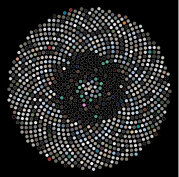
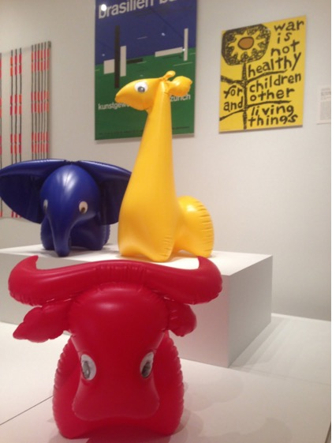
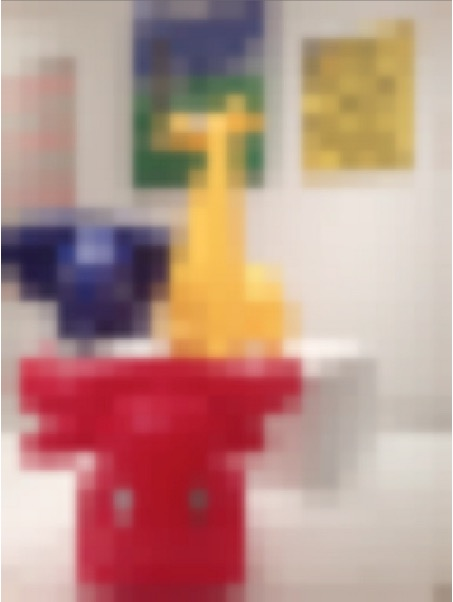
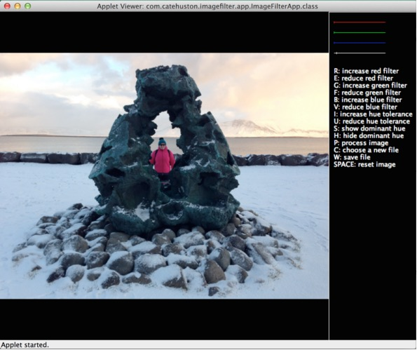
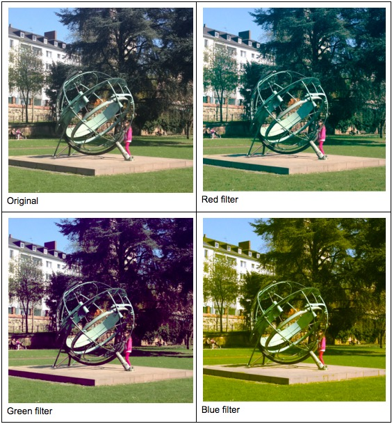
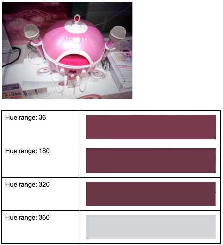
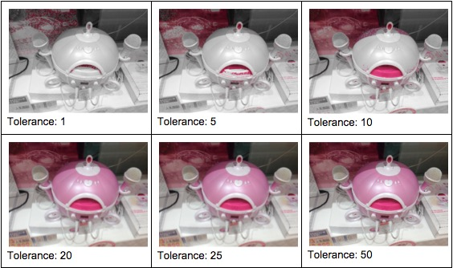
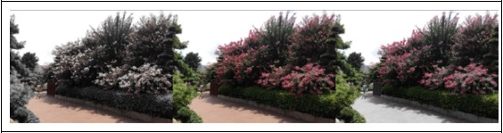
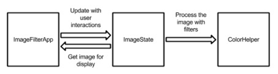

Making Your Own Image Filters
by Cate Huston
Cate left the tech industry and spent a year finding her way back whilst building her passion project Show & Hide. She is Director of Mobile Engineering at Ride, speaks internationally on mobile development and engineering culture, co-curates Technically Speaking and is an advisor at Glowforge. Cate doesn’t exactly live in Colombia but she spends a lot of time there, and has lived and worked in the UK, Australia, Canada, China the United States, previously as an engineer at Google, an Extreme Blue intern at IBM, and a ski instructor. Cate blogs at Accidentally in Code and is \@catehstn on Twitter.
A Brilliant Idea (That Wasn’t All That Brilliant)
When I was traveling in China I often saw series of four paintings showing the same place in different seasons. Color—the cool whites of winter, pale hues of spring, lush greens of summer, and reds and yellows of fall—is what visually differentiates the seasons. Around 2011, I had what I thought was a brilliant idea: I wanted to be able to visualize a photo series as a series of colors. I thought it would show travel, and progression through the seasons.
But I didn’t know how to calculate the dominant color from an image. I thought about scaling the image down to a 1x1 square and seeing what was left, but that seemed like cheating. I knew how I wanted to display the images, though: in a layout called the Sunflower layout. It’s the most efficient way to lay out circles.
I left this project for years, distracted by work, life, travel, talks. Eventually I returned to it, figured out how to calculate the dominant color, and finished my visualization. That is when I discovered that this idea wasn’t, in fact, brilliant. The progression wasn’t as clear as I hoped, the dominant color extracted wasn’t generally the most appealing shade, the creation took a long time (a couple of seconds per image), and it took hundreds of images to make something cool (Figure: Sunflower layout).

You might think this would be discouraging, but by the time I got to this point I had learned many things that hadn’t come my way before — about color spaces and pixel manipulation — and I had started making those cool partially colored images, the kind you find on postcards of London with a red bus or phone booth and everything else in grayscale.I used a framework called Processing because I was familiar with it from developing programming curricula, and because I knew it made it easy to create visual applications. It’s a tool originally designed for artists, so it abstracts away much of the boilerplate. It allowed me to play and experiment.
University, and later work, filled up my time with other people’s ideas and priorities. Part of finishing this project was learning how to carve out time to make progress on my own ideas; I required about four hours of good mental time a week. A tool that allowed me to move faster was therefore really helpful, even necessary—although it came with its own set of problems, especially around writing tests.
I felt that thorough tests were especially important for validating how the project was working, and for making it easier to pick up and resume a project that was often on ice for weeks, even months at a time. Tests (and blogposts!) formed the documentation for this project. I could leave failing tests to document what should happen that I hadn’t figured out yet, and make changes with confidence that if I changed something that I had forgotten was critical, the tests would remind me.
This chapter will cover some details about Processing and talk you through color spaces, decomposing an image into pixels and manipulating them, and unit testing something that wasn’t designed with testing in mind. But I hope it will also prompt you to make some progress on whatever idea you haven’t made time for lately; even if your idea turns out to be as terrible as mine was, you may make something cool and learn something fascinating in the process.
The App
This chapter will show you how to create an image filter application that you can use to manipulate your digital images using filters that you create. We’ll use Processing, a programming language and development environment built in Java. We’ll cover setting up the application in Processing, some of the features of Processing, aspects of color representation, and how to create color filters (mimicking what was used in old-fashioned photography). We’ll also create a special kind of filter that can only be done digitally: determining the dominant hue of an image and showing or hiding it, to create eerie partially colored images.
Finally, we’ll add a thorough test suite, and cover how to handle some of the limitations of Processing when it comes to testability.
Background
Today we can take a photo, manipulate it, and share it with all our friends in a matter of seconds. However, a long long time ago (in digital terms), it was a process that took weeks.
In the old days, we would take the picture, then when we had used a whole roll of film, we would take it in to be developed (often at the pharmacy). We’d pick up the developed pictures some days later—and discover that there was something wrong with many of them. Hand not steady enough? Random person or thing that we didn’t notice at the time? Overexposed? Underexposed? Of course by then it was too late to remedy the problem.
The process that turned the film into pictures was one that most people didn’t understand. Light was a problem, so you had to be careful with the film. There was a process, involving darkened rooms and chemicals, that they sometimes showed in films or on TV.
But probably even fewer people understand how we get from the point-and-click on our smartphone camera to an image on Instagram. There are actually many similarities.
Photographs, the Old Way
Photographs are created by the effect of light on a light-sensitive surface. Photographic film is covered in silver halide crystals. (Extra layers are used to create color photographs — for simplicity let’s just stick to black-and-white photography here.)
When talking an old-fashioned photograph — with film — the light hits the film according to what you’re pointing at, and the crystals at those points are changed in varying degrees, according to the amount of light. Then, the development process converts the silver salts to metallic silver, creating the negative. The negative has the light and dark areas of the image inverted. Once the negatives have been developed, there is another series of steps to reverse the image and print it.
Photographs, the Digital Way
When taking pictures using our smartphones or digital cameras, there is no film. There is something called an active-pixel sensor which functions in a similar way. Where we used to have silver crystals, now we have pixels — tiny squares. (In fact, pixel is short for “picture element”.) Digital images are made up of pixels, and the higher the resolution the more pixels there are. This is why low-resolution images are described as “pixelated” — you can start to see the squares. These pixels are stored in an array, with the number in each array “box” containing the color.
In Figure: Blow-up animals at MoMA NY, we see a high-resolution picture of some blow-up animals taken at MoMA in NYC. Figure: Blow-up animals, blown up is the same image blown up, but with just 24 x 32 pixels.


See how it’s so blurry? We call that pixelation, which means the image is too big for the number of pixels it contains and the squares become visible. Here we can use it to get a better sense of an image being made up of squares of color.What do these pixels look like? If we print out the colors of some of the
pixels in the middle (10,10 to 10,14) using the handy Integer.toHexString in
Java, we get hex colors:
FFE8B1
FFFAC4
FFFCC3
FFFCC2
FFF5B7
Hex colors are six characters long. The first two are the red value, the second
two the green value, and the third two the blue value. Sometimes there are an
extra two characters which are the alpha value. In this case FFFAC4 means:
- red = FF (hex) = 255 (base 10)
- green = FA (hex) = 250 (base 10)
- blue = C4 (hex) = 196 (base 10)
Running the App
In Figure: The App, we have a picture of our app running. It’s very much developer-designed, I know, but we only have 500 lines of Java to work with so something had to suffer! You can see the list of commands on the right. Some things we can do:
- Adjust the RGB filters.
- Adjust the “hue tolerance”.
- Set the dominant hue filters, to either show or hide the dominant hue.
- Apply our current setting (it is infeasible to run this every key press).
- Reset the image.
- Save the image we have made.

Processing makes it simple to create a little application and do image manipulation; it has a very visual focus. We’ll work with the Java-based version, although Processing has now been ported to other languages.For this tutorial, I use Processing in Eclipse by adding core.jar to my build path. If
you want, you can use the Processing IDE, which removes the need for a lot of
boilerplate Java code. If you later want to port it over to Processing.js and
upload it online, you need to replace the file chooser with something else.
There are detailed instructions with screenshots in the project’s repository. If you are familiar with Eclipse and Java already you may not need them.
Processing Basics
Size and Color
We don’t want our app to be a tiny grey window, so the two essential methods
that we will start by overriding are
setup(), and
draw(). The setup() method is
only called when the app starts, and is where we do things like set the size of
the app window. The draw() method is called for every animation, or after
some action can be triggered by calling redraw(). (As covered in the
Processing Documentation, draw() should not be called explicitly.)
Processing is designed to work nicely to create animated sketches, but in this
case we don’t want animation1, we want to respond to key presses. To prevent
animation (which would be a drag on performance) we will call
noLoop() from setup. This
means that draw() will only be called immediately after setup(), and
whenever we call redraw().
private static final int WIDTH = 360;
private static final int HEIGHT = 240;
public void setup() {
noLoop();
// Set up the view.
size(WIDTH, HEIGHT);
background(0);
}
public void draw() {
background(0);
}
These don’t really do much yet, but try running the app again, adjusting the constants
in WIDTH and HEIGHT, to see different sizes.
background(0) specifies a black background. Try changing the number passed
to background() and see what happens — it’s the alpha value, and so if you
only pass one number in, it is always greyscale. Alternatively, you can call
background(int r, int g, int b).
PImage
The PImage object is the Processing object that represents an image. We’re going to be using this a lot, so it’s worth reading through the documentation. It has three fields (Table: PImage fields) as well as some methods that we will use (Table: PImage methods).
`pixels[]` Array containing the color of every pixel in the image `width` Image width in pixels `height` Image height in pixels -
PImage fields
`loadPixels` Loads the pixel data for the image into its `pixels[]` array `updatePixels` Updates the image with the data in its `pixels[]` array `resize` Changes the size of an image to a new width and height `get` Reads the color of any pixel or grabs a rectangle of pixels `set` Writes a color to any pixel or writes an image into another `save` Saves the image to a TIFF, TARGA, PNG, or JPEG file -
PImage methods
File Chooser
Processing handles most of the file choosing process; we just need to call
selectInput(), and
implement a callback (which must be public).
To people familiar with Java this might seem odd; a listener or a lambda expression might make more sense. However, as Processing was developed as a tool for artists, for the most part these things have been abstracted away by the language to keep it unintimidating. This is a choice the designers made: to prioritize simplicity and approachability over power and flexibility. If you use the stripped-down Processing editor, rather than Processing as a library in Eclipse, you don’t even need to define class names.
Other language designers with different target audiences make different choices, as they should. For example, in Haskell, a purely functional language, purity of functional language paradigms is prioritised over everything else. This makes it a better tool for mathematical problems than for anything requiring IO.
// Called on key press.
private void chooseFile() {
// Choose the file.
selectInput("Select a file to process:", "fileSelected");
}
public void fileSelected(File file) {
if (file == null) {
println("User hit cancel.");
} else {
// save the image
redraw(); // update the display
}
}
Responding to Key Presses
Normally in Java, responding to key presses requires adding listeners and implementing
anonymous functions. However, as with the file chooser, Processing handles a lot of
this for us. We just need to implement
keyPressed().
public void keyPressed() {
print(“key pressed: ” + key);
}
If you run the app again, every time you press a key it will output it to the
console. Later, you’ll want to do different things depending on what key was
pressed, and to do this you just switch on the key value. (This exists in the
PApplet superclass, and contains the last key pressed.)
Writing Tests
This app doesn’t do a lot yet, but we can already see number of places where things can go wrong; for example, triggering the wrong action with key presses. As we add complexity, we add more potential problems, such as updating the image state incorrectly, or miscalculating pixel colors after applying a filter. I also just enjoy (some think weirdly) writing unit tests. Whilst some people seem to think of testing as a thing that delays checking code in, I see tests as my #1 debugging tool, and as an opportunity to deeply understand what is going on in my code.
I adore Processing, but it’s designed to create visual applications, and in this area maybe unit testing isn’t a huge concern. It’s clear it isn’t written for testability; in fact it’s written in such a way that makes it untestable, as is. Part of this is because it hides complexity, and some of that hidden complexity is really useful in writing unit tests. The use of static and final methods make it much harder to use mocks (objects that record interaction and allow you to fake part of your system to verify another part is behaving correctly), which rely on the ability to subclass.
We might start a greenfield project with great intentions to do Test Driven Development (TDD) and achieve perfect test coverage, but in reality we are usually looking at a mass of code written by various and assorted people and trying to figure out what it is supposed to be doing, and how and why it is going wrong. Then maybe we don’t write perfect tests, but writing tests at all will help us navigate the situation, document what is happening and move forward.
We create “seams” that allow us to break something up from its amorphous mass of tangled pieces and verify it in parts. To do this, we will sometimes create wrapper classes that can be mocked. These classes do nothing more than hold a collection of similar methods, or forward calls on to another object that cannot be mocked (due to final or static methods), and as such they are very dull to write, but key to creating seams and making the code testable.
I used JUnit for tests, as I was working in Java with Processing as a library.
For mocking I used Mockito. You can download
Mockito and add the JAR to
your buildpath in the same way you added core.jar. I created two helper
classes that make it possible to mock and test the app (otherwise we can’t test
behavior involving PImage or PApplet methods).
IFAImage is a thin wrapper around PImage. PixelColorHelper is a wrapper
around applet pixel color methods. These wrappers call the final, and static
methods, but the caller methods are neither final nor static themselves — this
allows them to be mocked. These are deliberately lightweight, and we could have
gone further, but this was sufficient to address the major problem of
testability when using Processing — static, and final methods. The goal
was to make an app, after all — not a unit testing framework for Processing!
A class called ImageState forms the “model” of this application, removing as
much logic from the class extending PApplet as possible, for better
testability. It also makes for a cleaner design and separation of concerns:
the App controls the interactions and the UI, not the image
manipulation.
Do-It-Yourself Filters
RGB Filters
Before we start writing more complicated pixel processing, we can start with a short exercise that will get us comfortable doing pixel manipulation. We’ll create standard (red, green, blue) color filters that will allow us to create the same effect as placing a colored plate over the lens of a camera, only letting through light with enough red (or green, or blue).
By applying different filters to this image Figure: Four (Simulated) Seasons in Frankfurt (taken on a spring trip to Frankfurt) it’s almost like the seasons are different. (Remember the four-seasons paintings we imagined earlier?) See how much more green the tree becomes when the red filter is applied.

How do we do it?-
Set the filter. (You can combine red, green and blue filters as in the image earlier; I haven’t in these examples so that the effect is clearer.)
-
For each pixel in the image, check its RGB value.
-
If the red is less than the red filter, set the red to zero.
- If the green is less than the green filter, set the green to zero.
- If the blue is less than the blue filter, set the blue to zero.
- Any pixel with insufficient of all of these colors will be black.
Although our image is 2-dimensional, the pixels live in a 1-dimensional array starting top-left and moving left to right, top to bottom. The array indices for a 4x4 image are shown here:
0 1 2 3 4 5 6 7 8 9 10 11 12 13 14 15 -
Pixel indices for a 4x4 image
public void applyColorFilter(PApplet applet, IFAImage img, int minRed,
int minGreen, int minBlue, int colorRange) {
img.loadPixels();
int numberOfPixels = img.getPixels().length;
for (int i = 0; i < numberOfPixels; i++) {
int pixel = img.getPixel(i);
float alpha = pixelColorHelper.alpha(applet, pixel);
float red = pixelColorHelper.red(applet, pixel);
float green = pixelColorHelper.green(applet, pixel);
float blue = pixelColorHelper.blue(applet, pixel);
red = (red >= minRed) ? red : 0;
green = (green >= minGreen) ? green : 0;
blue = (blue >= minBlue) ? blue : 0;
image.setPixel(i, pixelColorHelper.color(applet, red, green, blue, alpha));
}
}
Color
As our first example of an image filter showed, the concept and representation of colors in a program is very important to understanding how our filters work. To prepare ourselves for working on our next filter, let’s explore the concept of color a bit more.
We were using a concept in the previous section called “color space”, which is way of representing color digitally. Kids mixing paints learn that colors can be made from other colors; things work slightly differently in digital (less risk of being covered in paint!) but similar. Processing makes it really easy to work with whatever color space you want, but you need to know which one to pick, so it’s important to understand how they work.
RGB colors
The color space that most programmers are familiar with is RGBA: red, green, blue and alpha; it’s what we were using above. In hexadecimal (base 16), the first two digits are the amount of red, the second two blue, the third two green, and the final two (if they are there) are the alpha value. The values range from 00 in base 16 (0 in base 10) through to FF (255 in base 10). The alpha represents opacity, where 0 is transparent and 100% is opaque.
HSB or HSV colors
This color space is not quite as well known as RGB. The first number represents the hue, the second number the saturation (how intense the color is), and the third number the brightness. The HSB color space can be represented by a cone: The hue is the position around the cone, saturation the distance from the centre, and brightness the height (0 brightness is black).
Extracting the Dominant Hue from an Image
Now that we’re comfortable with pixel manipulation, let’s do something that we could only do digitally. Digitally, we can manipulate the image in a way that isn’t so uniform.
When I look through my stream of pictures I can see themes emerging. The nighttime series I took at sunset from a boat on Hong Kong harbour, the grey of North Korea, the lush greens of Bali, the icy whites and pale blues of an Icelandic winter. Can we take a picture and pull out that main color that dominates the scene?
It makes sense to use the HSB color space for this — we are interested in the hue when figuring out what the main color is. It’s possible to do this using RGB values, but more difficult (we would have to compare all three values) and it would be more sensitive to darkness. We can change to the HSB color space using colorMode.
Having settled on this color space, it’s simpler than it would have been using RGB. We need to find the hue of each pixel, and figure out which is most “popular”. We probably don’t want to be exact — we want to group very similar hues together, and we can handle this using two strategies.
Firstly we will round the decimals that come back to whole numbers, as this makes it simple to determine which “bucket” we put each pixel in. Secondly we can change the range of the hues. If we think back to the cone representation above, we might think of hues as having 360 degrees (like a circle). Processing uses 255 by default, which is the same as is typical for RGB (255 is FF in hexadecimal). The higher the range we use, the more distinct the hues in the picture will be. Using a smaller range will allow us to group together similar hues. Using a 360 degree range, it’s unlikely that we will be able to tell the difference between a hue of 224 and a hue of 225, as the difference is very small. If we make the range one-third of that, 120, both these hues become 75 after rounding.
We can change the range of hues using colorMode. If we call colorMode(HSB, 120)
we have just made our hue detection a bit less than half as exact as if we used
the 255 range. We also know that our hues will fall into 120 “buckets”, so we
can simply go through our image, get the hue for a pixel, and add one to the
corresponding count in an array. This will be $O(n)$, where $n$ is the
number of pixels, as it requires action on each one.
for(int px in pixels) {
int hue = Math.round(hue(px));
hues[hue]++;
}
At the end we can print this hue to the screen, or display it next to the picture (Figure: Dominant hue versus size of range (number of buckets) used).

Once we’ve extracted the “dominant” hue, we can choose to either show or hide it in the image. We can show the dominant hue with varying tolerance (ranges around it that we will accept). Pixels that don’t fall into this range can be changed to grayscale by setting the value based on the brightness. Figure: Showing dominant hue shows the dominant hue determined using a range of 240, and with varying tolerance. The tolerance is the amount either side of the most popular hue that gets grouped together.
Alternatively, we can hide the dominant hue. In Figure: Hiding dominant hue, the images are transposed side by side: the original in the middle, on the left the dominant hue (the brownish color of the path) is shown, and on the right the dominant hue is hidden (range 320, tolerance 20).
Each image requires a double pass (looking at each pixel twice), so on images with a large number of pixels it can take a noticeable amount of time.public HSBColor getDominantHue(PApplet applet, IFAImage image, int hueRange) {
image.loadPixels();
int numberOfPixels = image.getPixels().length;
int[] hues = new int[hueRange];
float[] saturations = new float[hueRange];
float[] brightnesses = new float[hueRange];
for (int i = 0; i < numberOfPixels; i++) {
int pixel = image.getPixel(i);
int hue = Math.round(pixelColorHelper.hue(applet, pixel));
float saturation = pixelColorHelper.saturation(applet, pixel);
float brightness = pixelColorHelper.brightness(applet, pixel);
hues[hue]++;
saturations[hue] += saturation;
brightnesses[hue] += brightness;
}
// Find the most common hue.
int hueCount = hues[0];
int hue = 0;
for (int i = 1; i < hues.length; i++) {
if (hues[i] > hueCount) {
hueCount = hues[i];
hue = i;
}
}
// Return the color to display.
float s = saturations[hue] / hueCount;
float b = brightnesses[hue] / hueCount;
return new HSBColor(hue, s, b);
}
public void processImageForHue(PApplet applet, IFAImage image, int hueRange,
int hueTolerance, boolean showHue) {
applet.colorMode(PApplet.HSB, (hueRange - 1));
image.loadPixels();
int numberOfPixels = image.getPixels().length;
HSBColor dominantHue = getDominantHue(applet, image, hueRange);
// Manipulate photo, grayscale any pixel that isn't close to that hue.
float lower = dominantHue.h - hueTolerance;
float upper = dominantHue.h + hueTolerance;
for (int i = 0; i < numberOfPixels; i++) {
int pixel = image.getPixel(i);
float hue = pixelColorHelper.hue(applet, pixel);
if (hueInRange(hue, hueRange, lower, upper) == showHue) {
float brightness = pixelColorHelper.brightness(applet, pixel);
image.setPixel(i, pixelColorHelper.color(applet, brightness));
}
}
image.updatePixels();
}
Combining Filters
With the UI as it is, the user can combine the red, green, and blue filters together. If they combine the dominant hue filters with the red, green, and blue filters the results can sometimes be a little unexpected, because of changing the color spaces.
Processing has some built-in
methods that support the
manipulation of images; for example, invert and blur.
To achieve effects like sharpening, blurring, or sepia we apply matrices. For every pixel of the image, take the sum of products where each product is the color value of the current pixel or a neighbor of it, with the corresponding value of the filter matrix. There are some special matrices of specific values that sharpen images.
Architecture
There are three main components to the app (Figure: Architecture diagram).
The App
The app consists of one file: ImageFilterApp.java. This
extends PApplet (the
Processing app superclass) and handles layout, user interaction, etc. This class
is the hardest to test, so we want to keep it as small as possible.
Model
Model consists of three files: HSBColor.java is a simple container for HSB
colors (consisting of hue, saturation, and brightness). IFAImage is a
wrapper around PImage for testability. (PImage contains a number of final
methods which cannot be mocked.) Finally, ImageState.java is the object
which describes the state of the image — what level of filters should be applied,
and which filters — and handles loading the image. (Note: The image needs to be reloaded
whenever color filters are adjusted down, and whenever the dominant hue is
recalculated. For clarity, we just reload each time the image is processed.)
Color
Color consists of two files: ColorHelper.java is where all the image
processing and filtering takes place, and PixelColorHelper.java
abstracts out final PApplet methods for pixel colors for testability.

### Wrapper Classes and Tests Briefly mentioned above, there are two wrapper classes (IFAImage and
PixelColorHelper) that wrap library methods for testability. This is because,
in Java, the keyword “final” indicates a method that cannot be overridden or hidden by
subclasses, which means they cannot be mocked.
PixelColorHelper wraps methods on the applet. This means we need to pass the
applet in to each method call. (Alternatively, we could make it a field and set
it on initialization.)
package com.catehuston.imagefilter.color;
import processing.core.PApplet;
public class PixelColorHelper {
public float alpha(PApplet applet, int pixel) {
return applet.alpha(pixel);
}
public float blue(PApplet applet, int pixel) {
return applet.blue(pixel);
}
public float brightness(PApplet applet, int pixel) {
return applet.brightness(pixel);
}
public int color(PApplet applet, float greyscale) {
return applet.color(greyscale);
}
public int color(PApplet applet, float red, float green, float blue,
float alpha) {
return applet.color(red, green, blue, alpha);
}
public float green(PApplet applet, int pixel) {
return applet.green(pixel);
}
public float hue(PApplet applet, int pixel) {
return applet.hue(pixel);
}
public float red(PApplet applet, int pixel) {
return applet.red(pixel);
}
public float saturation(PApplet applet, int pixel) {
return applet.saturation(pixel);
}
}
IFAImage is a wrapper around PImage, so in our app we don’t initialize a
PImage, but rather an IFAImage — although we do have to expose the
PImage so that it can be rendered.
package com.catehuston.imagefilter.model;
import processing.core.PApplet;
import processing.core.PImage;
public class IFAImage {
private PImage image;
public IFAImage() {
image = null;
}
public PImage image() {
return image;
}
public void update(PApplet applet, String filepath) {
image = null;
image = applet.loadImage(filepath);
}
// Wrapped methods from PImage.
public int getHeight() {
return image.height;
}
public int getPixel(int px) {
return image.pixels[px];
}
public int[] getPixels() {
return image.pixels;
}
public int getWidth() {
return image.width;
}
public void loadPixels() {
image.loadPixels();
}
public void resize(int width, int height) {
image.resize(width, height);
}
public void save(String filepath) {
image.save(filepath);
}
public void setPixel(int px, int color) {
image.pixels[px] = color;
}
public void updatePixels() {
image.updatePixels();
}
}
Finally, we have our simple container class, HSBColor. Note that it is
immutable (once created, it cannot be changed). Immutable objects are better
for thread safety (something we have no need of here!) but are also easier to
understand and reason about. In general, I tend to make simple model classes
immutable unless I find a good reason for them not to be.
Some of you may know that there are already classes representing color in
Processing and in
Java itself.
Without going too much into the details of these, both of them are more focused
on RGB color, and the Java class in particular adds way more complexity than we
need. We would probably be okay if we did want to use Java’s awt.Color; however
awt GUI components cannot be used in
Processing,
so for our purposes creating this simple container class to hold these
bits of data we need is easiest.
package com.catehuston.imagefilter.model;
public class HSBColor {
public final float h;
public final float s;
public final float b;
public HSBColor(float h, float s, float b) {
this.h = h;
this.s = s;
this.b = b;
}
}
ColorHelper and Associated Tests
ColorHelper is where all the image manipulation lives. The methods in this
class could be static if not for needing a PixelColorHelper. (Although we
won’t get into the debate about the merits of static methods here.)
package com.catehuston.imagefilter.color;
import processing.core.PApplet;
import com.catehuston.imagefilter.model.HSBColor;
import com.catehuston.imagefilter.model.IFAImage;
public class ColorHelper {
private final PixelColorHelper pixelColorHelper;
public ColorHelper(PixelColorHelper pixelColorHelper) {
this.pixelColorHelper = pixelColorHelper;
}
public boolean hueInRange(float hue, int hueRange, float lower, float upper) {
// Need to compensate for it being circular - can go around.
if (lower < 0) {
lower += hueRange;
}
if (upper > hueRange) {
upper -= hueRange;
}
if (lower < upper) {
return hue < upper && hue > lower;
} else {
return hue < upper || hue > lower;
}
}
public HSBColor getDominantHue(PApplet applet, IFAImage image, int hueRange) {
image.loadPixels();
int numberOfPixels = image.getPixels().length;
int[] hues = new int[hueRange];
float[] saturations = new float[hueRange];
float[] brightnesses = new float[hueRange];
for (int i = 0; i < numberOfPixels; i++) {
int pixel = image.getPixel(i);
int hue = Math.round(pixelColorHelper.hue(applet, pixel));
float saturation = pixelColorHelper.saturation(applet, pixel);
float brightness = pixelColorHelper.brightness(applet, pixel);
hues[hue]++;
saturations[hue] += saturation;
brightnesses[hue] += brightness;
}
// Find the most common hue.
int hueCount = hues[0];
int hue = 0;
for (int i = 1; i < hues.length; i++) {
if (hues[i] > hueCount) {
hueCount = hues[i];
hue = i;
}
}
// Return the color to display.
float s = saturations[hue] / hueCount;
float b = brightnesses[hue] / hueCount;
return new HSBColor(hue, s, b);
}
public void processImageForHue(PApplet applet, IFAImage image, int hueRange,
int hueTolerance, boolean showHue) {
applet.colorMode(PApplet.HSB, (hueRange - 1));
image.loadPixels();
int numberOfPixels = image.getPixels().length;
HSBColor dominantHue = getDominantHue(applet, image, hueRange);
// Manipulate photo, grayscale any pixel that isn't close to that hue.
float lower = dominantHue.h - hueTolerance;
float upper = dominantHue.h + hueTolerance;
for (int i = 0; i < numberOfPixels; i++) {
int pixel = image.getPixel(i);
float hue = pixelColorHelper.hue(applet, pixel);
if (hueInRange(hue, hueRange, lower, upper) == showHue) {
float brightness = pixelColorHelper.brightness(applet, pixel);
image.setPixel(i, pixelColorHelper.color(applet, brightness));
}
}
image.updatePixels();
}
public void applyColorFilter(PApplet applet, IFAImage image, int minRed,
int minGreen, int minBlue, int colorRange) {
applet.colorMode(PApplet.RGB, colorRange);
image.loadPixels();
int numberOfPixels = image.getPixels().length;
for (int i = 0; i < numberOfPixels; i++) {
int pixel = image.getPixel(i);
float alpha = pixelColorHelper.alpha(applet, pixel);
float red = pixelColorHelper.red(applet, pixel);
float green = pixelColorHelper.green(applet, pixel);
float blue = pixelColorHelper.blue(applet, pixel);
red = (red >= minRed) ? red : 0;
green = (green >= minGreen) ? green : 0;
blue = (blue >= minBlue) ? blue : 0;
image.setPixel(i, pixelColorHelper.color(applet, red, green, blue, alpha));
}
}
}
We don’t want to test this with whole images, because we want images that we know the properties of and reason about. We approximate this by mocking the images and making them return an array of pixels — in this case, 5. This allows us to verify that the behavior is as expected. Earlier we covered the concept of mock objects, and here we see their use. We are using Mockito as our mock object framework.
To create a mock we use the @Mock annotation on an instance variable, and it will be mocked at runtime by the
MockitoJUnitRunner.
To stub (set the behavior of) a method, we use:
when(mock.methodCall()).thenReturn(value)
To verify a method was called, we use verify(mock.methodCall()).
We’ll show a few example test cases here; if you’d like to see the rest, visit the source folder for this project in the 500 Lines or Less GitHub repository.
package com.catehuston.imagefilter.color;
/* ... Imports omitted ... */
@RunWith(MockitoJUnitRunner.class)
public class ColorHelperTest {
@Mock PApplet applet;
@Mock IFAImage image;
@Mock PixelColorHelper pixelColorHelper;
ColorHelper colorHelper;
private static final int px1 = 1000;
private static final int px2 = 1010;
private static final int px3 = 1030;
private static final int px4 = 1040;
private static final int px5 = 1050;
private static final int[] pixels = { px1, px2, px3, px4, px5 };
@Before public void setUp() throws Exception {
colorHelper = new ColorHelper(pixelColorHelper);
when(image.getPixels()).thenReturn(pixels);
setHsbValuesForPixel(0, px1, 30F, 5F, 10F);
setHsbValuesForPixel(1, px2, 20F, 6F, 11F);
setHsbValuesForPixel(2, px3, 30F, 7F, 12F);
setHsbValuesForPixel(3, px4, 50F, 8F, 13F);
setHsbValuesForPixel(4, px5, 30F, 9F, 14F);
}
private void setHsbValuesForPixel(int px, int color, float h, float s, float b) {
when(image.getPixel(px)).thenReturn(color);
when(pixelColorHelper.hue(applet, color)).thenReturn(h);
when(pixelColorHelper.saturation(applet, color)).thenReturn(s);
when(pixelColorHelper.brightness(applet, color)).thenReturn(b);
}
private void setRgbValuesForPixel(int px, int color, float r, float g, float b,
float alpha) {
when(image.getPixel(px)).thenReturn(color);
when(pixelColorHelper.red(applet, color)).thenReturn(r);
when(pixelColorHelper.green(applet, color)).thenReturn(g);
when(pixelColorHelper.blue(applet, color)).thenReturn(b);
when(pixelColorHelper.alpha(applet, color)).thenReturn(alpha);
}
@Test public void testHsbColorFromImage() {
HSBColor color = colorHelper.getDominantHue(applet, image, 100);
verify(image).loadPixels();
assertEquals(30F, color.h, 0);
assertEquals(7F, color.s, 0);
assertEquals(12F, color.b, 0);
}
@Test public void testProcessImageNoHue() {
when(pixelColorHelper.color(applet, 11F)).thenReturn(11);
when(pixelColorHelper.color(applet, 13F)).thenReturn(13);
colorHelper.processImageForHue(applet, image, 60, 2, false);
verify(applet).colorMode(PApplet.HSB, 59);
verify(image, times(2)).loadPixels();
verify(image).setPixel(1, 11);
verify(image).setPixel(3, 13);
}
@Test public void testApplyColorFilter() {
setRgbValuesForPixel(0, px1, 10F, 12F, 14F, 60F);
setRgbValuesForPixel(1, px2, 20F, 22F, 24F, 70F);
setRgbValuesForPixel(2, px3, 30F, 32F, 34F, 80F);
setRgbValuesForPixel(3, px4, 40F, 42F, 44F, 90F);
setRgbValuesForPixel(4, px5, 50F, 52F, 54F, 100F);
when(pixelColorHelper.color(applet, 0F, 0F, 0F, 60F)).thenReturn(5);
when(pixelColorHelper.color(applet, 20F, 0F, 0F, 70F)).thenReturn(15);
when(pixelColorHelper.color(applet, 30F, 32F, 0F, 80F)).thenReturn(25);
when(pixelColorHelper.color(applet, 40F, 42F, 44F, 90F)).thenReturn(35);
when(pixelColorHelper.color(applet, 50F, 52F, 54F, 100F)).thenReturn(45);
colorHelper.applyColorFilter(applet, image, 15, 25, 35, 100);
verify(applet).colorMode(PApplet.RGB, 100);
verify(image).loadPixels();
verify(image).setPixel(0, 5);
verify(image).setPixel(1, 15);
verify(image).setPixel(2, 25);
verify(image).setPixel(3, 35);
verify(image).setPixel(4, 45);
}
}
Notice that:
- We use the
MockitoJUnitrunner. - We mock
PApplet,IFAImage(created for expressly this purpose), andImageColorHelper. - Test methods are annotated with
@Test2. If you want to ignore a test (e.g., whilst debugging) you can add the annotation@Ignore. - In
setup(), we create the pixel array and have the mock image always return it. - Helper methods make it easier to set expectations for recurring tasks (e.g.,
set*ForPixel()).
Image State and Associated Tests
ImageState holds the current “state” of the image — the image itself, and the
settings and filters that will be applied. We’ll omit the full implementation
of ImageState here, but we’ll show how it can be tested. You can visit the source
repository for this project to see the full details.
package com.catehuston.imagefilter.model;
import processing.core.PApplet;
import com.catehuston.imagefilter.color.ColorHelper;
public class ImageState {
enum ColorMode {
COLOR_FILTER,
SHOW_DOMINANT_HUE,
HIDE_DOMINANT_HUE
}
private final ColorHelper colorHelper;
private IFAImage image;
private String filepath;
public static final int INITIAL_HUE_TOLERANCE = 5;
ColorMode colorModeState = ColorMode.COLOR_FILTER;
int blueFilter = 0;
int greenFilter = 0;
int hueTolerance = 0;
int redFilter = 0;
public ImageState(ColorHelper colorHelper) {
this.colorHelper = colorHelper;
image = new IFAImage();
hueTolerance = INITIAL_HUE_TOLERANCE;
}
/* ... getters & setters */
public void updateImage(PApplet applet, int hueRange, int rgbColorRange,
int imageMax) { ... }
public void processKeyPress(char key, int inc, int rgbColorRange,
int hueIncrement, int hueRange) { ... }
public void setUpImage(PApplet applet, int imageMax) { ... }
public void resetImage(PApplet applet, int imageMax) { ... }
// For testing purposes only.
protected void set(IFAImage image, ColorMode colorModeState,
int redFilter, int greenFilter, int blueFilter, int hueTolerance) { ... }
}
Here we can test that the appropriate actions happen for the given state; that fields are incremented and decremented appropriately.
package com.catehuston.imagefilter.model;
/* ... Imports omitted ... */
@RunWith(MockitoJUnitRunner.class)
public class ImageStateTest {
@Mock PApplet applet;
@Mock ColorHelper colorHelper;
@Mock IFAImage image;
private ImageState imageState;
@Before public void setUp() throws Exception {
imageState = new ImageState(colorHelper);
}
private void assertState(ColorMode colorMode, int redFilter,
int greenFilter, int blueFilter, int hueTolerance) {
assertEquals(colorMode, imageState.getColorMode());
assertEquals(redFilter, imageState.redFilter());
assertEquals(greenFilter, imageState.greenFilter());
assertEquals(blueFilter, imageState.blueFilter());
assertEquals(hueTolerance, imageState.hueTolerance());
}
@Test public void testUpdateImageDominantHueHidden() {
imageState.setFilepath("filepath");
imageState.set(image, ColorMode.HIDE_DOMINANT_HUE, 5, 10, 15, 10);
imageState.updateImage(applet, 100, 100, 500);
verify(image).update(applet, "filepath");
verify(colorHelper).processImageForHue(applet, image, 100, 10, false);
verify(colorHelper).applyColorFilter(applet, image, 5, 10, 15, 100);
verify(image).updatePixels();
}
@Test public void testUpdateDominantHueShowing() {
imageState.setFilepath("filepath");
imageState.set(image, ColorMode.SHOW_DOMINANT_HUE, 5, 10, 15, 10);
imageState.updateImage(applet, 100, 100, 500);
verify(image).update(applet, "filepath");
verify(colorHelper).processImageForHue(applet, image, 100, 10, true);
verify(colorHelper).applyColorFilter(applet, image, 5, 10, 15, 100);
verify(image).updatePixels();
}
@Test public void testUpdateRGBOnly() {
imageState.setFilepath("filepath");
imageState.set(image, ColorMode.COLOR_FILTER, 5, 10, 15, 10);
imageState.updateImage(applet, 100, 100, 500);
verify(image).update(applet, "filepath");
verify(colorHelper, never()).processImageForHue(any(PApplet.class),
any(IFAImage.class), anyInt(), anyInt(), anyBoolean());
verify(colorHelper).applyColorFilter(applet, image, 5, 10, 15, 100);
verify(image).updatePixels();
}
@Test public void testKeyPress() {
imageState.processKeyPress('r', 5, 100, 2, 200);
assertState(ColorMode.COLOR_FILTER, 5, 0, 0, 5);
imageState.processKeyPress('e', 5, 100, 2, 200);
assertState(ColorMode.COLOR_FILTER, 0, 0, 0, 5);
imageState.processKeyPress('g', 5, 100, 2, 200);
assertState(ColorMode.COLOR_FILTER, 0, 5, 0, 5);
imageState.processKeyPress('f', 5, 100, 2, 200);
assertState(ColorMode.COLOR_FILTER, 0, 0, 0, 5);
imageState.processKeyPress('b', 5, 100, 2, 200);
assertState(ColorMode.COLOR_FILTER, 0, 0, 5, 5);
imageState.processKeyPress('v', 5, 100, 2, 200);
assertState(ColorMode.COLOR_FILTER, 0, 0, 0, 5);
imageState.processKeyPress('h', 5, 100, 2, 200);
assertState(ColorMode.HIDE_DOMINANT_HUE, 0, 0, 0, 5);
imageState.processKeyPress('i', 5, 100, 2, 200);
assertState(ColorMode.HIDE_DOMINANT_HUE, 0, 0, 0, 7);
imageState.processKeyPress('u', 5, 100, 2, 200);
assertState(ColorMode.HIDE_DOMINANT_HUE, 0, 0, 0, 5);
imageState.processKeyPress('h', 5, 100, 2, 200);
assertState(ColorMode.COLOR_FILTER, 0, 0, 0, 5);
imageState.processKeyPress('s', 5, 100, 2, 200);
assertState(ColorMode.SHOW_DOMINANT_HUE, 0, 0, 0, 5);
imageState.processKeyPress('s', 5, 100, 2, 200);
assertState(ColorMode.COLOR_FILTER, 0, 0, 0, 5);
// Random key should do nothing.
imageState.processKeyPress('z', 5, 100, 2, 200);
assertState(ColorMode.COLOR_FILTER, 0, 0, 0, 5);
}
@Test public void testSave() {
imageState.set(image, ColorMode.SHOW_DOMINANT_HUE, 5, 10, 15, 10);
imageState.setFilepath("filepath");
imageState.processKeyPress('w', 5, 100, 2, 200);
verify(image).save("filepath-new.png");
}
@Test public void testSetupImageLandscape() {
imageState.set(image, ColorMode.SHOW_DOMINANT_HUE, 5, 10, 15, 10);
when(image.getWidth()).thenReturn(20);
when(image.getHeight()).thenReturn(8);
imageState.setUpImage(applet, 10);
verify(image).update(applet, null);
verify(image).resize(10, 4);
}
@Test public void testSetupImagePortrait() {
imageState.set(image, ColorMode.SHOW_DOMINANT_HUE, 5, 10, 15, 10);
when(image.getWidth()).thenReturn(8);
when(image.getHeight()).thenReturn(20);
imageState.setUpImage(applet, 10);
verify(image).update(applet, null);
verify(image).resize(4, 10);
}
@Test public void testResetImage() {
imageState.set(image, ColorMode.SHOW_DOMINANT_HUE, 5, 10, 15, 10);
imageState.resetImage(applet, 10);
assertState(ColorMode.COLOR_FILTER, 0, 0, 0, 5);
}
}
Notice that:
- We exposed a protected initialization method
setfor testing that helps us quickly get the system under test into a specific state. - We mock
PApplet,ColorHelper, andIFAImage(created expressly for this purpose). - This time we use a helper (
assertState()) to simplify asserting the state of the image.
Measuring test coverage
I use EclEmma to
measure test coverage within Eclipse. Overall for the app we have 81% test
coverage, with none of ImageFilterApp covered, 94.8% for ImageState, and
100% for ColorHelper.
ImageFilterApp
This is where everything is tied together, but we want as little as possible here. The App is hard to unit test (much of it is layout), but because we’ve pushed so much of the app’s functionality into our own tested classes, we’re able to assure ourselves that the important parts are working as intended.
We set the size of the app, and do the layout. (These things are verified by running the app and making sure it looks okay — no matter how good the test coverage, this step should not be skipped!)
package com.catehuston.imagefilter.app;
import java.io.File;
import processing.core.PApplet;
import com.catehuston.imagefilter.color.ColorHelper;
import com.catehuston.imagefilter.color.PixelColorHelper;
import com.catehuston.imagefilter.model.ImageState;
@SuppressWarnings("serial")
public class ImageFilterApp extends PApplet {
static final String INSTRUCTIONS = "...";
static final int FILTER_HEIGHT = 2;
static final int FILTER_INCREMENT = 5;
static final int HUE_INCREMENT = 2;
static final int HUE_RANGE = 100;
static final int IMAGE_MAX = 640;
static final int RGB_COLOR_RANGE = 100;
static final int SIDE_BAR_PADDING = 10;
static final int SIDE_BAR_WIDTH = RGB_COLOR_RANGE + 2 * SIDE_BAR_PADDING + 50;
private ImageState imageState;
boolean redrawImage = true;
@Override
public void setup() {
noLoop();
imageState = new ImageState(new ColorHelper(new PixelColorHelper()));
// Set up the view.
size(IMAGE_MAX + SIDE_BAR_WIDTH, IMAGE_MAX);
background(0);
chooseFile();
}
@Override
public void draw() {
// Draw image.
if (imageState.image().image() != null && redrawImage) {
background(0);
drawImage();
}
colorMode(RGB, RGB_COLOR_RANGE);
fill(0);
rect(IMAGE_MAX, 0, SIDE_BAR_WIDTH, IMAGE_MAX);
stroke(RGB_COLOR_RANGE);
line(IMAGE_MAX, 0, IMAGE_MAX, IMAGE_MAX);
// Draw red line
int x = IMAGE_MAX + SIDE_BAR_PADDING;
int y = 2 * SIDE_BAR_PADDING;
stroke(RGB_COLOR_RANGE, 0, 0);
line(x, y, x + RGB_COLOR_RANGE, y);
line(x + imageState.redFilter(), y - FILTER_HEIGHT,
x + imageState.redFilter(), y + FILTER_HEIGHT);
// Draw green line
y += 2 * SIDE_BAR_PADDING;
stroke(0, RGB_COLOR_RANGE, 0);
line(x, y, x + RGB_COLOR_RANGE, y);
line(x + imageState.greenFilter(), y - FILTER_HEIGHT,
x + imageState.greenFilter(), y + FILTER_HEIGHT);
// Draw blue line
y += 2 * SIDE_BAR_PADDING;
stroke(0, 0, RGB_COLOR_RANGE);
line(x, y, x + RGB_COLOR_RANGE, y);
line(x + imageState.blueFilter(), y - FILTER_HEIGHT,
x + imageState.blueFilter(), y + FILTER_HEIGHT);
// Draw white line.
y += 2 * SIDE_BAR_PADDING;
stroke(HUE_RANGE);
line(x, y, x + 100, y);
line(x + imageState.hueTolerance(), y - FILTER_HEIGHT,
x + imageState.hueTolerance(), y + FILTER_HEIGHT);
y += 4 * SIDE_BAR_PADDING;
fill(RGB_COLOR_RANGE);
text(INSTRUCTIONS, x, y);
updatePixels();
}
// Callback for selectInput(), has to be public to be found.
public void fileSelected(File file) {
if (file == null) {
println("User hit cancel.");
} else {
imageState.setFilepath(file.getAbsolutePath());
imageState.setUpImage(this, IMAGE_MAX);
redrawImage = true;
redraw();
}
}
private void drawImage() {
imageMode(CENTER);
imageState.updateImage(this, HUE_RANGE, RGB_COLOR_RANGE, IMAGE_MAX);
image(imageState.image().image(), IMAGE_MAX/2, IMAGE_MAX/2,
imageState.image().getWidth(), imageState.image().getHeight());
redrawImage = false;
}
@Override
public void keyPressed() {
switch(key) {
case 'c':
chooseFile();
break;
case 'p':
redrawImage = true;
break;
case ' ':
imageState.resetImage(this, IMAGE_MAX);
redrawImage = true;
break;
}
imageState.processKeyPress(key, FILTER_INCREMENT, RGB_COLOR_RANGE,
HUE_INCREMENT, HUE_RANGE);
redraw();
}
private void chooseFile() {
// Choose the file.
selectInput("Select a file to process:", "fileSelected");
}
}
Notice that:
- Our implementation extends
PApplet. - Most work is done in
ImageState. fileSelected()is the callback forselectInput().static finalconstants are defined up at the top.
The Value of Prototyping
In real world programming, we spend a lot of time on productionisation work. Making things look just so. Maintaining 99.9% uptime. We spend more time on corner cases than refining algorithms.
These constraints and requirements are important for our users. However there’s also space for freeing ourselves from them to play and explore.
Eventually, I decided to port this to a native mobile app. Processing has an Android library, but as many mobile developers do, I opted to go iOS first. I had years of iOS experience, although I’d done little with CoreGraphics, but I don’t think even if I had had this idea initially, I would have been able to build it straight away on iOS. The platform forced me to operate in the RGB color space, and made it hard to extract the pixels from the image (hello, C). Memory and waiting was a major risk.
There were exhilarating moments, when it worked for the first time. When it first ran on my device… without crashing. When I optimized memory usage by 66% and cut seconds off the runtime. And there were large periods of time locked away in a dark room, cursing intermittently.
Because I had my prototype, I could explain to my business partner and our designer what I was thinking and what the app would do. It meant I deeply understood how it would work, and it was just a question of making it work nicely on this other platform. I knew what I was aiming for, so at the end of a long day shut away fighting with it and feeling like I had little to show for it I kept going… and hit an exhilarating moment and milestone the following morning.
So, how do you find the dominant color in an image? There’s an app for that: Show & Hide.